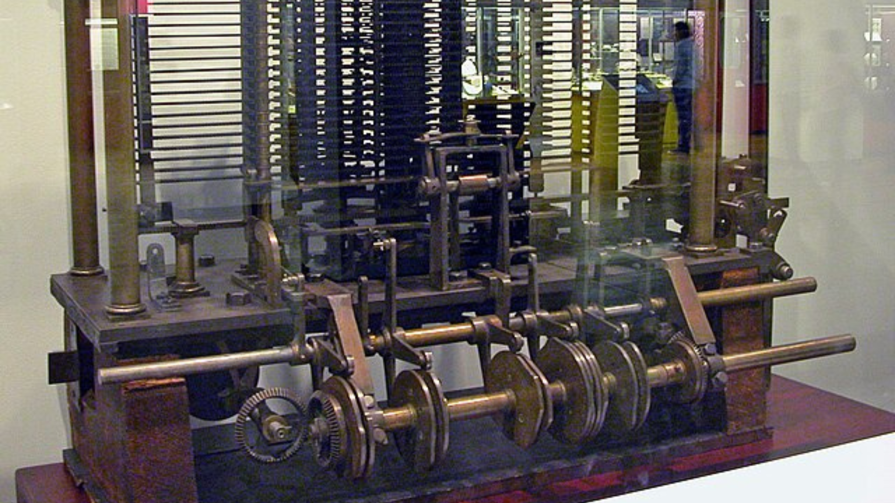

.svg)
Engenho Analítico
Charles Babbage projetou a máquina analítica em 1837, um protótipo de computador moderno capaz de realizar cálculos complexos automaticamente.

Foi proposta pelo professor matemático Charles Babbage em 1837, Charles Babbage nasceu, sendo a data mais provável 26 de dezembro de 1791, em Londres na Inglaterra. Faleceu em 18 de outubro de 1871, na mesma cidade. De uma família abastada, os recursos de seu pai permitiram que tivesse uma educação de qualidade para a época.
A máquina analítica foi descrita como a sucessora da Máquina Diferencial (um design para um computador mecânico mais simples. Para época ela foi uma inovação jamais vista, sendo capaz de somar, subtrair, multiplicar e dividir em sequência automática a uma velocidade de 60 somas por minuto.
Esse novo dispositivo foi projetado para ser automático, controlado por um programa e com suporte digital – praticamente o nosso computador moderno. Seu uso era geral e poderia realizar qualquer tipo de cálculo com uma ampla variedade de números com o objetivo de resolver problemas complexos.
A máquina - quando construída - seguiria instruções programadas e seria mesmo capaz de optar entre instruções diferentes, baseando-se nos resultados das operações anteriores.Tanto os dados como as instruções eram introduzidas por meio de cartões perfurados, e os resultados finais sairiam impressos automaticamente.
A máquina foi projetada para ser dividida em quatro componentes: o moinho, o armazém (store – local onde a informação ficaria guardada digitalmente), o leitor e a impressora, que são hoje os componentes dos computadores atuais. O moinho correspondia a unidade de cálculo, semelhante à CPU (Central Processing Unit – Unidade Central de Processamento), o armazém era o local onde os dados eram armazenados antes do processamento e o leitor e a impressora eram os dispositivos de entrada e saída respectivamente (input e output). O aparelho deveria ser movido a vapor e comandado por um assistente.
No entanto, a máquina não foi construída e apenas uma pequena parte foi montada em 1871, aquando da morte de Babbage.Por ser um projeto muito ousado, não conseguiu construí-lo em vida. Entretanto, manteve-se estudando suas possibilidades até a morte (1871). Apenas a partir de 1960, segundo Swaine e Freiberger (2020), os computadores teriam potência o suficiente para armazenar mil números de cinquenta dígitos, informações que Babbage já pensava em processar na metade do século XIX. Cada componente foi à frente de seu tempo, mesmo a capacidade de impressão para as tabelas de números era avançada.